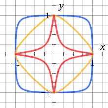
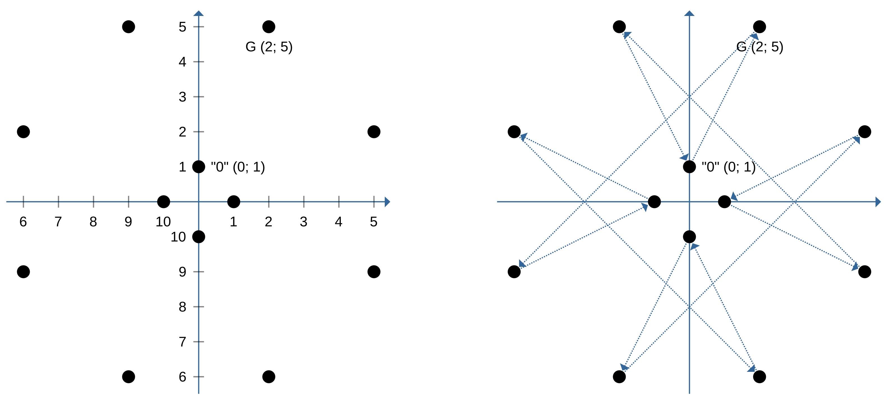

Рассмотрим различные значения дискриминанта $D$ и соответствующие им кривые, которые представлены на рисунках 16.1a, 16.1b, 16.1c.
(a) $D>0$(b) $D=0$(c) $D<0$Рис. 16.1 — Эллиптические кривые с различными дискриминантами
При $D>0$ график эллиптической кривой состоит из двух частей (см. рис.16.1a). Прямая, проходящая через точки $P(x_1; y_1)$ и $Q(x_2; y_2)$, обязательно пересечёт вторую часть кривой в точке с координатами $(x_3; \widetilde{y}_3)$, отображением которой является точка $R(x_3; y_3)$, где $y_3 = - \widetilde{y}_3$. Любые точки на кривой при $D>0$ являются элементами группы по сложению.
Если $D=0$, то левая и правая части касаются в одной точке (см. рис.16.1b). Эти кривые называются сингулярными и не рассматриваются.
Если $D<0$, то записанное выше уравнение[Wer] описывает одну кривую, представленную на рис.16.1c.
Рассмотрим операцию сложения точек на эллиптической кривой при $D \ne 0$ (другие кривые не рассматриваются).
Пусть точки $P(x_1; y_1)$ и $Q(x_2; y_2)$ принадлежат эллиптической кривой (рис.16.1a). Определим операцию сложения точек
$$ P + Q = R. $$
Eсли $P \neq Q$, то точка $R$ определяется как отображение (инвертированная $y$-координата) точки, полученной пересечением эллиптической кривой и прямой $PQ$. Совместно решая уравнения кривой и прямой, можно найти координаты их точки пересечения. Зная координаты точки пересечения, можно вычислить и координаты искомой точки $R = (x_3; y_3)$, которые будут равны:
$$ x_3 = \lambda^2 - x_1 - x_2, $$
$$ y_3 = - y_1 + \lambda (x_1 - x_3), $$
где
$$ \lambda = \frac{y_2 - y_1}{x_2 - x_1} $$
есть тангенс угла наклона между прямой, проходящей через точки $P$ и $Q$, и осью $x$.
Теперь рассмотрим специальные случаи.
Пусть точки совпадают: $P = Q$. Прямая $PQ$ превращается в касательную к кривой в точке $P$. Находим пересечение касательной с кривой, инвертируем $y$-координату полученной точки, это будет точка $P + P = R$. Тогда $\lambda$ – тангенс угла между касательной, проведённой к эллиптической кривой в точке $P$, и осью $x$. Запишем уравнение касательной к эллиптической кривой в точке $(x; y)$ в виде:
$$ 2 y y' = 3 x^2 + a. $$
Производная равна
$$ y' = \frac{3 x^2 + a}{2 y}, $$
и
$$ \lambda = \frac{3 x_1^2 + a}{2 y_1}. $$
Координаты $R$ имеют прежний вид:
$$ x_3 = \lambda^2 - x_1 - x_2, $$
$$ y_3 = - y_1 + \lambda (x_1 - x_3), $$
Пусть $P$ и $Q$ – противоположные точки, то есть $P=(x; y)$ и $Q=(x; -y)$. Введём ещё одну точку на бесконечности и обозначим её $O$ (точка $O$ или точка 0 «ноль», или альтернативное обозначение $\infty$). Результатом сложения двух противоположных точек определим точку $O$. Точка $Q$ в данном случае обозначается как $-P$:
$$ P = (x; y), ~ -P = (x; -y), ~ P + (-P) = O. $$
Пусть $P = (x; 0)$ лежит на оси $x$, тогда
$$ -P = P, ~ P + P = O. $$
Все точки эллиптической кривой, а также точка $O$ образуют коммутативную группу${{\mathbb{E}}}({{\mathbb{R}}})$ относительно введённой операции сложения, то есть выполняются законы коммутативной группы:
сумма точек $P + Q$ лежит на эллиптической кривой;
существует нулевой элемент – это точка $O$ на бесконечности:
$$ \forall P \in {{\mathbb{E}}}({{\mathbb{R}}}): ~ O + P = P; $$
для любой точки $P$ существует единственный обратный элемент $-P$:
$$ P + (-P) = O; $$
выполняется ассоциативный закон:
$$ (P + Q) + F = P + (Q + F) = P + Q + F; $$
выполняется коммутативный закон:
$$ P + Q = Q + P. $$
Сложение точки с самой собой $d$ раз обозначим как умножение точки на число $d$:
$$ \underbrace{P + P + \ldots + P}_{d \text{ раз}} = d P. $$
16.7.2. Эллиптические кривые над конечным полем
Эллиптические кривые можно строить не только над полем рациональных чисел, но и над другими полями. То есть координатами точек могут выступать не только числа, принадлежащие полю рациональных чисел ${{\mathbb{R}}}$, но и элементы поля комплексных чисел $\mathbb{C}$ или конечного поля ${{\mathbb{F}}}$. В криптографии нашли своё применение эллиптические кривые именно над конечными полями.
Далее будем рассматривать эллиптические кривые над конечным полем, являющимся кольцом вычетов по модулю нечётного простого числа $p$ (дискриминант не равен 0):
gather*
E: y^2 = x^3 + a x + b,
a, b, x, y Z_p, Z_p = 0, 1, 2, , p-1.
Возможна также более компактная запись:
$$ E: ~ y^2 = x^3 + a x + b \mod p.$$
Точкой эллиптической кривой является пара чисел
$$ (x; y): x, y \in {{\mathbb{Z}}}_p, $$
удовлетворяющая уравнению эллиптической кривой, определённой над конечным полем ${{\mathbb{Z}}}_p$.
Операцию сложения двух точек $P = (x_1; y_1)$ и $Q = (x_2; y_2)$ определим точно так же, как и в случае кривой над полем вещественных чисел, описанном выше.
Две точки $P = (x_1; y_1)$ и $Q = (x_2; y_2)$ эллиптической кривой, определённой над конечным полем ${{\mathbb{Z}}}_p$, складываются по правилу:
$$
\lambda = \begin{cases}
\dfrac{y_2 - y_1}{x_2 - x_1} \mod p, & \text{ если } P \ne Q, \\
\\
\dfrac{3 x_1^2 + a}{2 y_1} \mod p, & \text{ если } P = Q. \\
\end{cases}
$$
Сложение точки $P=(x; y)$ c противоположной $(-P) = (x; -y)$ даёт точку в бесконечности $O$:
gather*
P + (-P) = O,
(x_1; y_1) + (x_1; -y_1) = O,
(x_1; 0) + (x_1; 0) = O.
Мы рассматриваем эллиптические кривые над конечным полем ${{\mathbb{Z}}}_p$, где $p > 3$ – простое число, элементы ${{\mathbb{Z}}}_p$ – целые числа $\{0, 1, 2, \ldots, p-1\}$, то есть исследуем следующее уравнение двух переменных $x, y \in {{\mathbb{Z}}}_p$:
$$ y^2 = x^3 + a x + b \mod p, $$
где $a, b \in {{\mathbb{Z}}}_p$ – некоторые константы.
Как и в случае выше, множество точек над конечным полем ${{\mathbb{Z}}}_p$, удовлетворяющих уравнению эллиптической кривой, вместе с точкой в бесконечности $O$ образуют конечную группу ${{\mathbb{E}}}({{\mathbb{Z}}}_p)$ относительно описанного закона сложения:
$$ {{\mathbb{E}}}({{\mathbb{Z}}}_p) ~ \equiv~ O ~ \bigcup ~
\left\{ (x; y) \in {{\mathbb{Z}}}_p \times {{\mathbb{Z}}}_p ~\Big|~ y^2 = x^3 + a x + b \mod p \right\}. $$
По теореме Хассе порядок группы точек $|{{\mathbb{E}}}({{\mathbb{Z}}}_p)|$ оценивается как
Найдём все решения этого уравнения, а также количество точек $|{{\mathbb{E}}}({{\mathbb{Z}}}_p)|$ на этой эллиптической кривой. Для нахождения решений уравнения составим следующую таблицу:
$x$
0
1
2
3
4
5
6
$y^2$
1
2
2
0
2
0
0
$y_1$
1
3
3
0
3
0
0
$y_2 = - y_1 \mod p$
6
4
4
4
Выпишем все точки, принадлежащие данной эллиптической кривой ${{\mathbb{E}}}({{\mathbb{Z}}}_p)$:
Найденный порядок точки $A = (-8; 7)$ равен 12, следовательно, она является генератором всей группы.
В таблице[tab:elliptic-group-sample] найдены порядки точек и циклические подгруппы группы точек ${{\mathbb{E}}}({{\mathbb{Z}}}_p)$ такой же эллиптической кривой
${{\mathbb{G}}}^{(2)} ~=~ \left\{ ~ (-1; 0), ~ O ~ \right\}$
2
Таблица 16.8 — Генераторы и циклические подгруппы группы точек эллиптической кривой
16.7.4. Эллиптические кривые в скрученной форме Эдвардса
Любую эллиптическую кривую с помощью замены координат можно представить в рассмотренной ранее форме Вейерштрасса. Используя данное представление мы ранее ввели операцию сложения точек, умножения точки на число, смогли описать группу точек и циклическую подгруппу. Однако в отдельных случаях эллиптические кривые можно записать в другой, более удобной для частных задач форме. Например, любые эллиптические кривые над алгебраически замкнутым полем можно задать с помощью следующего уравнения:
Примеры кривых, заданных этим уравнениям при различных значениях $d$, приведены на рис.16.2. Данное кривые в указанном представлении называются эллиптическими кривыми в скрученной форме Эдвардса (англ. Twisted Edwards Curves, [102]).
Рис. 16.2 — Эллиптические кривые в скрученной форме Эдвардса при значениях (от внешней фигуры ко внутренней) $d = +0{,}9, -\sqrt{8}, -300$
Для данной формы формулы сложения точек задаются одним и тем же способом для любых случаев. В этом важное отличие от формы Вейерштрасса, для которой есть частный случай сложения точки самой с собой (с отдельной формулой вычисления угла наклона касательной). Формулы сложения выглядят так:
При переходе к построению кривых над конечным полем, оказывается, что не все кривые, представимые в форме Вейерштрасса, могут быть представлены в скрученной форме Эдвардса. Для этого необходимо, чтобы порядок кривой $\|E\|$ делился на $4$. Однако если такие кривые использовать для криптографических целей, это даёт значимые преимущества:
меньшая трудоёмкость операций сложения точек;
отсутствие частных случаев для формул сложения (усложнение атак по сторонним каналам с различением времени);
16.7.5. Конвертация из скрученной формы Эдвардса в форму Вейерштрасса
Кривая в скрученной форме Эдвардса:
$$eu^2+v^2=1+du^2v^2 \mod p.$$
Кривая в форме Вейерштрасса:
$$ y^{2} = x^{3} + ax + b \mod p.$$
Зная коэффициенты $d$ и $e$ кривой в скрученной форме Эдвардса можно найти коэффициенты $a$ и $b$ эквивалентной кривой в форме Вейерштрасса:
$$ \begin{array}{l}
s = (e - d)/4, \\
t = (e + d)/6, \\
a = s^2 - 3t^2, \\
b = 2t^3 - ts^2. \\
\end{array} $$
И определить правила преобразования координат $(u, v)$ и $(x, y)$ между двумя кривыми:
Нахождение коэффициентов для кривой в скрученной форме Эдвардса по эквивалентной в форме Вейерштрасса является более сложной и нетривиальной задачей, включающей нахождение корней кубического уравнения $x^{3} + ax + b = 0 \mod p$. Кроме того, как было сказано ранее, не все кривые в форме Вейерштрасса имеют эквивалентную кривую в скрученной форме Эдвардса.
16.7.6. Пример группы точек кривой в скрученной форме Эдвардса
Рис. 16.3 — Группа точек эллиптической кривой в скрученной форме Эдвардса $x^2+y^2=1+6x^2y^2 \mod 11$
Данная группа изоморфна группе вычетов по сложению ${{\mathbb{Z}}}_{12}$. Можно удостовериться, что сложение двух точек $P (6; 9)$ и $Q(10; 0)$ будет соответствовать результату сложения элементов «2» и «3» в группе ${{\mathbb{Z}}}_{12}$:
Группа не имеет эквивалентной группы точек эллиптической кривой в форме Вейерштрасса над конечным полем ${{\mathbb{F}}}_{11}$. Группа точек соответствующей кривой $y^2 = x^3 + 6 \bmod 11$ имеет только 11 элементов в группе.